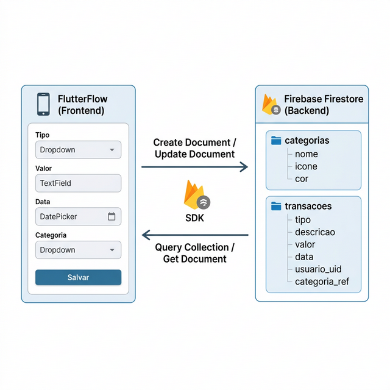
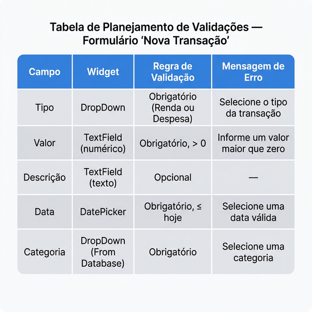

SEMANA 5 – Formulários, Validação e Definição do Banco
Nesta semana, você irá detalhar a estrutura final das coleções do seu projeto no Firestore, definir os tipos de cada campo e planejar as validações dos formulários no FlutterFlow. Na próxima semana, essas coleções serão criadas no Firebase.
Agora que você tem o modelo conceitual das coleções (Semana 4), é hora de transformar esse modelo em uma estrutura detalhada de campos: definindo nomes, tipos de dados e referências entre coleções. Nesta semana você prepara tudo isso — o planejamento completo — para que na Semana 6 as coleções sejam criadas diretamente no Firebase via FlutterFlow.
Fonte: FlutterFlow Documentation; Firebase Documentation. |
5.1 FlutterFlow e Banco de Dados: Entendendo a Estratégia
Uma dúvida comum neste ponto é: "o FlutterFlow tem um banco de dados local para eu usar durante o desenvolvimento?"
|
O FlutterFlow não possui um banco de dados local relacional nativo (como SQLite) sem uso de código customizado avançado. O que ele oferece são:
Por isso, a estratégia adotada neste projeto é: planejar a estrutura das coleções nesta semana (campos, tipos, referências) e criar as coleções no Firebase na Semana 6, já prontas para receber os dados do app. |
Tipos de Dados Comuns no FlutterFlow/Firestore
| Tipo | Descrição | Exemplo de Uso |
|---|---|---|
| String | Texto de tamanho variável | nome, descrição, e-mail |
| int (Integer) | Número inteiro | quantidade, pontuação |
| double | Número decimal (ponto flutuante) | valor, preco, peso |
| bool (Boolean) | Verdadeiro ou falso | ativo, concluido, favorito |
| Timestamp | Data e hora | created_at, data_vencimento |
| Document Reference | Referência a um documento de outra coleção | categoria_ref (referência à coleção categorias) |
Esses tipos de dados são exatamente os que você usará ao criar as coleções no Firebase na Semana 6. Na prática, o FlutterFlow se comunica com o Firestore enviando e recebendo dados nestes formatos. Entender como cada campo se mapeia para um campo de formulário (widget) é a chave para construir o CRUD corretamente.
A Figura 5.2 mostra o fluxo completo de dados entre o app FlutterFlow e o banco de dados Firestore, evidenciando como as Actions de escrita (Create Document) e as Queries de leitura (Query Collection) transitam pela SDK do Firebase.

5.2 Definindo Coleções e Relacionamentos
Com base no modelo criado na Semana 4, agora é hora de definir a estrutura final das coleções: nome dos campos, tipos de dados e referências entre coleções. Documente essa estrutura — ela será o guia para criar as coleções no Firebase na Semana 6.
Estrutura das Coleções no Firestore
Diferente de bancos SQL, no Firestore não usamos scripts SQL para criar tabelas. As coleções e campos são definidos pelo FlutterFlow ao configurar a integração com o Firebase. Porém, é essencial documentar a estrutura planejada:
Coleção: categorias
├── nome (String, obrigatório)
├── icone (String)
├── cor (String)
└── created_at (Timestamp, automático)
Coleção: transacoes
├── tipo (String, obrigatório: 'Renda' ou 'Despesa')
├── descricao (String)
├── valor (double, obrigatório)
├── data (Timestamp, obrigatório)
├── usuario_uid (String, obrigatório — UID do Firebase Auth)
├── categoria_ref (Document Reference → categorias)
└── created_at (Timestamp, automático)
|
No Firestore, use o tipo Document Reference para criar
relacionamentos entre coleções. Quando uma transação referencia uma
categoria, o campo |
5.3 Planejamento das Validações de Formulário
A validação garante que os dados inseridos pelo usuário estejam corretos antes de serem salvos no banco. No FlutterFlow, a validação é configurada nos campos do formulário via Form Validation — mas como as coleções ainda serão criadas na Semana 6, o trabalho desta semana é planejar e documentar as validações de cada campo, para que a implementação seja feita diretamente com os widgets já vinculados às coleções reais.
Tipos de Validação Comuns
| Tipo de Validação | Regra | Exemplo de Mensagem |
|---|---|---|
| Campo obrigatório | O campo não pode estar vazio | "Este campo é obrigatório" |
| Tamanho mínimo | O texto deve ter ao menos N caracteres | "A senha deve ter no mínimo 6 caracteres" |
| Formato de e-mail | O campo deve seguir o padrão user@domain.com | "Digite um e-mail válido" |
| Valor numérico | O campo deve conter apenas números | "Digite apenas números" |
| Valor maior que zero | O número deve ser positivo | "O valor deve ser maior que R$ 0,00" |
Como Documentar as Validações
Para cada formulário do seu projeto, crie uma tabela de planejamento indicando campo a campo quais validações serão aplicadas. Esse documento será o guia de referência na hora de configurar os formulários no FlutterFlow na Semana 6.
A Figura 5.1 exemplifica uma tabela de planejamento completa para o formulário "Nova Transação" do app FinanCampus, mostrando campo, tipo de widget, regra de validação e mensagem de erro esperada.

| Campo | Tipo de Widget | Validação | Mensagem de Erro |
|---|---|---|---|
| Valor | TextField (numérico) | Obrigatório, maior que zero | "O valor deve ser maior que R$ 0,00" |
| Descrição | TextField (texto) | Obrigatório, mínimo 3 caracteres | "Descrição obrigatória (mín. 3 caracteres)" |
| Data | DatePicker | Obrigatório, não permite datas futuras | "Selecione uma data válida" |
| Categoria | DropDown (vinculado à coleção categorias) |
Obrigatório (seleção não pode ser vazia) | "Selecione uma categoria" |
|
As validações serão implementadas no FlutterFlow na
Semana 6, quando as coleções já estarão criadas
no Firebase e conectadas ao projeto. Dessa forma, os widgets TextField
e DropDown serão configurados já vinculados às coleções reais
— por exemplo, o campo Categoria já exibirá as opções carregadas
diretamente da coleção |
|
Nunca confie somente na validação do frontend. As Firestore Security Rules (regras de segurança do Firestore) são a segunda camada de proteção — elas definem quem pode ler e escrever em cada coleção diretamente no servidor, independente do que o app enviar. |
5.4 Estrutura Completa das Coleções do FinanCampus
Abaixo está a documentação completa das coleções do FinanCampus. Essa estrutura será usada como referência na Semana 6 para criar as coleções no Firebase via FlutterFlow.
| Campo | Tipo Firestore | Obrigatório | Observação |
|---|---|---|---|
| nome | String | Sim | Nome da categoria |
| icone | String | Não | Nome do ícone Material |
| cor | String | Não | Cor em hexadecimal (ex.: #FF6B6B) |
| Campo | Tipo Firestore | Obrigatório | Observação |
|---|---|---|---|
| tipo | String | Sim | 'Renda' ou 'Despesa' |
| descricao | String | Não | Descrição da transação |
| valor | double | Sim | Valor monetário |
| data | Timestamp | Sim | Data da transação |
| usuario_uid | String | Sim | UID do Firebase Auth |
| categoria_ref | Document Reference | Não | Referência à coleção categorias |
| created_at | Timestamp | Sim | Data de criação (automático) |
|
O Firebase Authentication gerencia automaticamente os dados de login
(e-mail, senha, UID). Você não precisa criar uma coleção de
usuários — o campo Se no futuro precisar armazenar dados extras do usuário
(foto de perfil, preferências), você pode criar uma coleção
|
A Figura 5.2 apresenta o fluxo de dados entre o FlutterFlow e o Firestore, mostrando como os formulários do app se traduzem em documentos nas coleções do banco.
5.5 Entregável da Semana
|
Na próxima semana (Semana 6), você criará o projeto no Firebase, configurará as coleções no FlutterFlow, habilitará a autenticação e começará a implementar o CRUD conectado ao banco real.
5.6 Estudo de Caso: FinanCampus
Veja como o grupo do FinanCampus documentou as coleções e as validações nesta semana.
|
Coleções documentadas (2 coleções):
A documentação está pronta para ser usada como referência na Semana 6 ao criar as coleções no Firebase via FlutterFlow. Tabela de planejamento de validações (formulário "Nova Transação"):
As validações serão implementadas no FlutterFlow na Semana 6,
quando as coleções já estarão conectadas e o DropDown de Categoria poderá
ser vinculado diretamente à coleção |